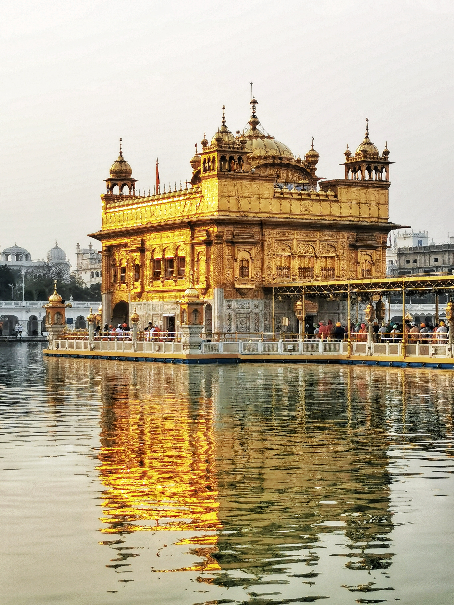
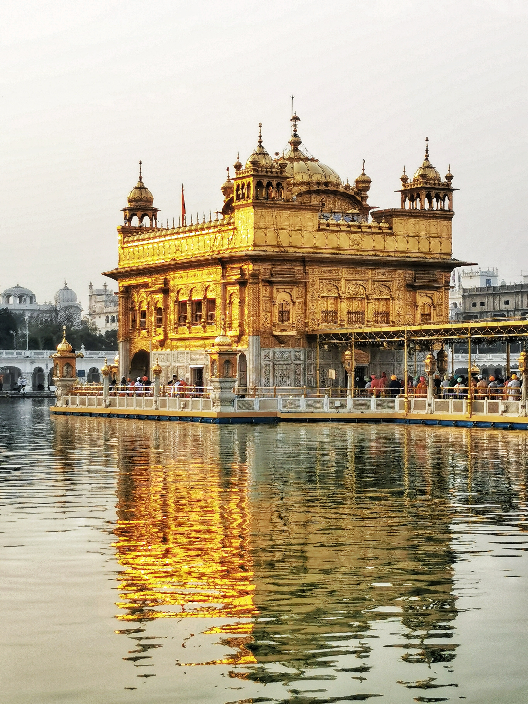

The Historical Places In India

Kedar Nath Temple (Uttarakhand)
Kedarnath Temple is the well-known Holy place of Lord Shiva all over India. Lord Shiva is a god, which is known as for destroyer and creator. In the history of Kedarnath meaning in the Sanskrit language is the lord of the field, this word comes from Indian origin and old language called Sanskrit, Kedara means field and Nath means lord. In the Sanskrit language, we gather the words to make a full word that’s why it becomes Kedarnath and become the part of Kedarnath History.
In the Kedarnath History there are many stories connected with Kedarnath Dham Temple according to legends and mythology. According to Kedarnath History and one of the most famous mythology mention in Mahabharata says that the Kedarnath temple was built by the Legendary Pandava brothers.
The legendary Pandava brother wanted to Lord Shiva forgive them for the guiltiness of killing their blood relatives in the Kurukshetra war. But Lord Shiva doesn’t want to complete their wish and Lord Shiva transforms himself as a bull and walking around the Himalayas Hills. But the legend Pandava brother found him, then Lord Shiva went underground but one of the legendary Pandava brothers manage to catch his hump and other parts of a bull presented in the different places in the Himalayas.
In Kedarnath, they found the hump, 2 forelegs of a bull found in a place known as Tunganath. In Rudranath they found the face of the bull and in Kalpeshwar found the hair. In Madhya-Maheswar they found the navel. Later, all these five places are known as Panch Kedar and one of the most famous part of the Kedarnath History.
Legendary Pandava Brother build the temple of Lord Shiva in all five places mentation above, later the Legendary
spiritual Guru Adi Shankaracharya took samadhi in Kedarnath but before
Legendary died in the 8th century A.D, he
built the temple again and keep Hindu religion alive and made the Kedarnath History.
There is another mythology story of Legend Nara and Narayan two legends part of the Lord Vishnu explained in the
Kedarnath History. Legend Nara and Narayana simply self-punishment in front of Jyotirlinga which came out of the earth.
Lord Shiva impress by Legend Nara and Narayan and ask them for a Vardaan. Legend Nara and Narayan ask Lord Shiva to sit
permanently as a Jyotirlingam at Kedarnath Dham Temple because other people who seeking forgiveness like legendary Pandava
brother should be free from their sins.
There is another little story in Kedarnath History about Kedarnath Dham Temple is that there is one littler temple placed next to Kedarnath Dham Temple is also worship, which is dedicated to Bhairo Nath. According to mythology, they believe that Bhairo Nath protects this land from evil. While the Kedarnath Dham temple is closed in the winter season.
Taj Mahal (Uttar Pradesh)
Taj Mahal, also spelled Tadj Mahall, mausoleum complex in Agra, western Uttar Pradesh state,
northern India. The Taj Mahal was built by the Mughal emperor Shah Jahān (reigned 1628–58)
to immortalize his wife Mumtaz Mahal (“Chosen One of the Palace”), who died in childbirth
in 1631, having been the emperor’s inseparable companion since their marriage in 1612. India’s
most famous and widely recognized building, it is situated in the eastern part of the city on the
southern (right) bank of the Yamuna (Jumna) River. Agra Fort (Red Fort), also on the right bank of
the Yamuna, is about 1 mile (1.6 km) west of the Taj Mahal.
In its harmonious proportions and its fluid incorporation of decorative elements, the Taj Mahal is
distinguished as the finest example of Mughal architecture, a blend of Indian, Persian, and Islamic styles.
Other attractions include twin mosque buildings (placed symmetrically on either side of the mausoleum), lovely
gardens, and a museum. One of the most beautiful structural compositions in the world, the Taj Mahal is also one
of the world’s most iconic monuments,
visited by millions of
tourists
each year.
The
complex
was designated a
UNESCO World
Heritage
site
in 1983.
History of con.
The plans for the complex have been attributed to various architects of the period, though the chief architect was probably
Ustad Aḥmad Lahawrī, an Indian of Persian descent. The five principal elements of the complex—main gateway, garden, mosque,
jawāb (literally “answer”; a building mirroring the mosque), and mausoleum (including its four minarets)—were conceived and
designed as a unified entity according to the tenets of Mughal building practice, which allowed no subsequent addition or alteration.
Building commenced about 1632. More than 20,000 workers were employed from India, Persia, the Ottoman Empire, and Europe to complete
the mausoleum itself by about 1638–39; the adjunct buildings were finished by 1643, and decoration work continued until at least 1647.
In total, construction of the 42-acre (17-hectare) complex spanned 22 years.
A tradition relates that Shah Jahān originally intended to build another mausoleum across the river to house his own remains. That structure
was to have been constructed of black marble, and it was to have been connected by a bridge to the Taj Mahal. He was deposed in 1658 by his
son Aurangzeb, however, and was imprisoned for the rest of his life in Agra Fort.
Layout
Resting in the middle of a wide plinth 23 feet (7 metres) high, the mausoleum proper is of white marble that reflects hues according to the intensity of sunlight
or moonlight. It has four nearly identical facades, each with a wide central arch rising to 108 feet (33 metres) at its apex and chamfered (slanted) corners incorporating
smaller arches. The majestic central dome, which reaches a height of 240 feet (73 metres) at the tip of its finial, is surrounded by four lesser domes. The acoustics inside
the main dome cause the single note of a flute to reverberate five times. The interior of the mausoleum is organized around an octagonal marble chamber ornamented with low-relief
carvings and semiprecious stones (pietra dura)

 
